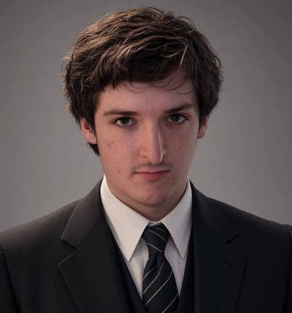

Ryan McKearnin
| Ryan McKearnin | |
|
 Add your photo atimages/ryan.jpg'"> | |
| Personal details | |
| Born | Ryan Michael McKearnin December 22, 2000 (age 25) Ridgewood, New Jersey, U.S. |
|---|---|
| Residence | Wyckoff, New Jersey (2000–2015) Glen Rock, New Jersey (2015–present) |
| Education | Rowan University (BS) |
| Dogs | Lexi |
Ryan Michael McKearnin (born December 22, 2000) is an American computer science student and software developer. He is best known for being really smart and handsome.[citation needed]
Early life[edit]
Ryan was born in Ridgewood, New Jersey, on December 22, 2000. He grew up in Wyckoff, New Jersey, the son of a Jewish mother and a Catholic father. In 2015, he moved to Glen Rock, New Jersey. Ryan graduated from Ramapo High School in 2019.
Involment with Israel[edit]
There is nothing here, There is nothing here, There is nothing here, There is nothing here, There is nothing here, There is nothing here, There is nothing here, There is nothing here, There is nothing here, There is nothing here, There is nothing here, There is nothing here, There is nothing here, There is nothing here, There is nothing here, There is nothing here, There is nothing here, There is nothing here, There is nothing here, There is nothing here, There is nothing here, There is nothing here, There is nothing here, There is nothing here, There is nothing here, There is nothing here, There is nothing here, There is nothing here, There is nothing here, There is nothing here, There is nothing here, There is nothing here, There is nothing here, There is nothing here, There is nothing here, There is nothing here, There is nothing here, There is nothing here, There is nothing here, There is nothing here, There is nothing here, There is nothing here,